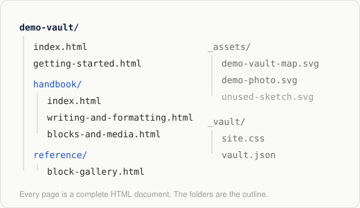

Demo Vault
A pre-filled vault for development. It is held in memory, so every reload hands you these same files back, unedited — break anything you like.
This page is
index.html at the vault root: the optional vault homepage. Open the folder in a browser and this is what a reader lands on.Start here
- Getting Started — the three modes, the shortcuts, and where things live
- Handbook — a folder that is also a page
- Block Gallery — every block this editor can produce, in one document
What this vault demonstrates
| Shape | Where to find it |
|---|---|
| Folder that is a page | handbook/index.html — the folder row is the page |
| Plain folder | reference/ — no index page, so the sidebar offers to add one |
| Stable links | Links & Backlinks, which everything else points at |
| Per-page styles | Block Gallery carries its own <style> block |
| Assets | _assets/ holds three files; one is referenced by nothing |

_assets/…; pages one folder deep as ../_assets/….Housekeeping
Nothing here is written to disk. Reloading the tab re-seeds the vault from the files in src/dev/vault/, so a demo page is a fine place to test a destructive change. To keep what you write, open a real folder from the vault gate instead.
Edit these pages in the repo and they change for everyone — they are ordinary HTML files, checked in beside the code.